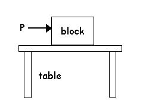
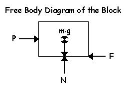
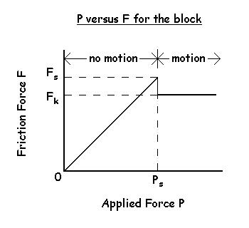

Friction
The Nature of Friction: When any two bodies in contact move or tend to move with respect to each other, there is a force in the contact plane between them that tends to prevent motion or the tendency for motion. This force is called the friction force. Friction forces are generally necessary for movement to start and to stop
The two major types of friction are:
Dry friction -
unlubricated surfaces
Fluid friction - lubricated surfaces and viscous damping
This lecture is primarily concerned with dry friction but it is important for students of biomechanics to be aware that the lubricated surfaces caused by synovial fluid in healthy joints allows friction forces to be extremely small.
Laws of Dry Friction
Consider the block resting on the table shown below. The force P tends to push the block horizontally to the right. We know from experience that if we push very lightly on the block, it does not move. We also know from static equilibrium, that the force of gravity tends to push the block downward and there is an equal force upward that is the reaction force of the table on the block. If this block is indeed in static equilibrium, there must be another force pushing horizontally to the left that is equal to P.

The free body diagram of the block shows these four forces. The gravitational force (m.g), the reaction force (N) and the friction force (F). The reaction force is often called the normal force and always acts at 90 degrees to the surface.

Here is a graph showing how the friction force (F) changes as the applied force (P) increases.
When P < Ps, the friction force is equal to P and prevents motion.
At the point where P = Ps, motion is pending because the applied force has reached the limit of the friction force (Fs).
Experiments have
shown that Fs is directly proportional to the normal force N.
Therefore, Fs
= μs.N
where μs
is called the coefficient of static friction and it is dependent on the
nature of the two contacting surfaces.
When P > Ps, motion occurs and experiments have shown that the friction force during motion (Fk) is less than Fs such that Fk = μk.N and where μk is the coefficient of kinetic friction.